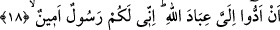

Kıptîleri, îman etmeleri ve onların iç dünyâlarında kapalı olan durumun ortaya çıkması
için “sınadık.” Hz. Mûsâ’yı (a.s.) göndererek onlara sınayanın yapacağı muâmeleyi
yaptık. Ancak onlar inkârı îmânâ tercih ettiler. Burada sınama fiili hakîkî mânâsıyla
kullanılmıştır. Onlara mühlet vererek ve rızıklarını genişleterek onları fitneye düşürdük
mânâsında da anlaşılabilir. Bu durumda fiilin sebebine isnâd edilmesi sebebiyle mecâz-
ı aklî olur. Çünkü bu durumda fitneden maksad, onların küfür ve mâsiyetleri
işlemeleridir. Allah Teâlâ ise mühlet verme ve onların rızıklarını bollaştırma yoluyla
böyle bir sonucun sebebi olmaktadır.
“Onlara” Allah katında “değerli bir elçi geldi.” Bu Hz. Mûsâ’dır (a.s.). Hz. Mûsâ
(a.s.) Allah katında çok çeşitli ikram ve iyiliklere hak kazanmış olup pek değerlidir.
Yahut bu elçi mü’minler nezdinde de kıymetlidir. Yahut kendi yaratılışı bakımından pek
değerlidir. Çünkü Allah Teâlâ gönderdiği her peygamberi, Ancak ve ancak hasep ve
nesep bakımından en şerefli zât olarak göndermiştir. Burada kerem, güzel haslet
demektir. Bazı görüşlere göre Hz. Mûsâ (a.s.) Allah ile konuşup onun kelâmını vâsıtasız
olarak işittiği için pek değerlidir. Âyette şuna da işâret edilmektedir ki Allah Teâlâ
Firavn’ı ve kavmini fitneye düşürüp sınama konusunda onları Muhammed ümmetine
fedâ etmiştir. Bunu yapmasının sebebi de şudur: Bu ümmet onlardan ibret alsınlar, onlar
gibi inkârlarında ısrar etmesinler. Akl-ı selîm yoluna dönüp peygamberlerinin dâvetine
icâbet ederek îman etsinler. Böylece kendilerine değerli elçi geldikten sonra onlara
isabet eden belâ, Muhammed ümmetine isâbet etmesin.
18. “Allâh’ın kullarını bana teslîm edin; çünkü ben sizin için güvenilir bir
elçiyim.”
“Allâh’ın kullarını” İsrâil oğullarını “bana teslîm edin” ve onları benimle beraber
salıp gönderin. Ben onları babalarının yurdu olan Şam’a götüreyim. Onları
köleleştirmeyin ve onlara işkence etmeyin; yani ben Allah’ın kullarını bana teslîm
etmenizi istemek için size elçi olarak gelmiş bulunuyorum.
Keşfü’l-esrâr’da şöyle denilmiştir: Firavun ve kavmi Kıptî idiler. İsrâil oğulları
onların topraklarında gurbetteydiler. Ken’ân diyarından gelmişlerdi ve Yakup (a.s)’ın
neslindendiler. Ataları Yâkub’la birlikte Yûsuf için Mısır’a geldiklerinde seksen iki
kişiydiler. Mısır’da evlenip çoğaldılar, Firavun’un boğulmasından sonra Hz. Mûsâ (a.s)
ile birlikte Mısır’dan ayrılıp Filistin Kasabası’na geldiklerinde iki bin altı yüz kişi
olmuşlardı. Firavun onları kendi ülkesinde esir etmiş, onlara eziyet ederek zor ve
tehlikeli işlerde çalıştırmıştı. Sonra İzzet sahibi Allah, Hz. Mûsâ’yı (a.s) onlara iki iş
için peygamber olarak gönderdi. İşin ilki Allah’ın birliğine inanmaları ve ona ibadet
etmeleriydi. Diğeri ise İsrâil oğullarını Hz. Mûsâ’ya (a.s) vererek onları bu sıkıntı ve